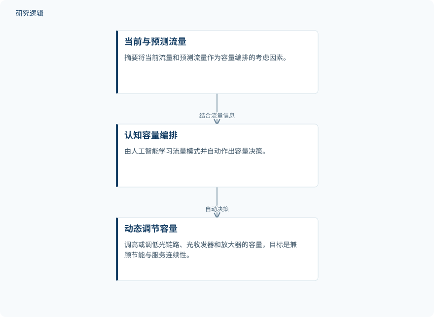

摘要解读
动态电信流量下节能光传送网络的认知容量编排模型
A Cognitive Capacity-Orchestration Model for Energy Efficient Optical Transport Networks Under Dynamic Telecommunications Traffic
解读更新 2026-11-10 12:03 · 依据公开摘要整理，未核验全文细节
流量快速波动时，光传送网如何避免长期按峰值配置容量，又不牺牲业务连续性？本文摘要提出以人工智能驱动容量动态编排。阅读价值在于理解这一节能思路，同时区分模型目标、技术潜力与已经验证的效果。
文章目录
流量不断变化，容量为何仍按峰值运行
视频流、云服务和移动通信使电信流量在分钟尺度内发生变化。摘要指出，传统光传送网为应对峰值负载而维持固定容量，因而在低流量时段浪费能源；电费又是运营支出的重要组成部分，形成节能压力。
容量调整还必须顾及通信服务本身。光网络承载互联网骨干、云基础设施和移动连接，涉及光收发器、可重构光分插复用器、放大器及光纤。摘要强调，自动化框架需要适应动态业务需求、多厂商环境和物理层损伤。
根据当前与预测流量，动态调整光网络容量
作者提出“认知容量编排模型”：由人工智能学习流量模式，结合当前流量与预测流量自动决策，动态调高或调低光链路、光收发器和放大器的容量。其目标是在动态流量下平衡能源效率与服务连续性，而非单纯降低设备容量。
摘要还讨论了基于 Transformer 的大语言模型，提及上下文推理、自然语言理解，以及配置生成、告警关联、故障诊断、路由与频谱分配、传输质量估计等用途。但这些能力如何嵌入容量编排模型，摘要没有交代具体实现。
依据摘要整理的认知容量编排示意


仅概括摘要明确描述的信息与决策关系，不表示论文原图、具体算法架构或已经验证的节能效果。
下载 SVG图示关系说明
实线表示相邻阶段的信息流，虚线表示跨阶段联系或反馈。
当前与预测流量 → 认知容量编排：结合流量信息；认知容量编排 → 动态调节容量：自动决策
摘要提出编排思路，未报告实测节能结果
摘要明确报告的是模型提议及其工作思路，没有给出节能幅度、服务质量变化或对比实验结果。因此，“节能且不破坏服务质量”应理解为设计目标，不能写成已经得到验证的结论；所列大语言模型用途也不能直接视为本研究已完成的功能。
样本、比较基线与验证范围仍待正文确认
仅凭本次摘要，无法判断流量数据来源、样本规模、网络拓扑、训练与测试划分，也无法确认比较基线、评价指标，以及是否开展仿真或真实网络验证。容量调整如何受到物理层条件和业务连续性要求的约束，同样缺少细节。这些是摘要未报告的信息，不代表论文没有开展相关工作。
阅读启发：追问智能决策如何落实服务约束
阅读启发：后续阅读可重点确认，流量预测如何转化为容量决策，服务质量与连续性又如何约束这一决策。对于大语言模型，还应区分它是参与容量控制，还是辅助配置、告警关联与故障诊断；这种角色划分有助于判断摘要中的技术展望与实际实现之间的距离。
以上为本站阅读启发与建议，不是论文已验证的结论。